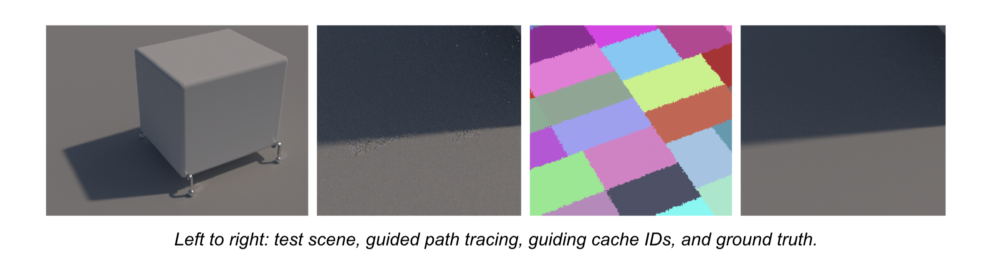

Toggle navigation
Drive
Representative Scenes
Candidate Approaches
Weekly Reports

Spatial Subdivision for Path Guiding
Suboptimal subdivision of the baseline approache
Since 03/01/2024
How the baseline KD tree is progressively built
Since 21/01/2024
Comparing improved subdivision approaches with the baseline
Since 25/01/2024
Plain Academic